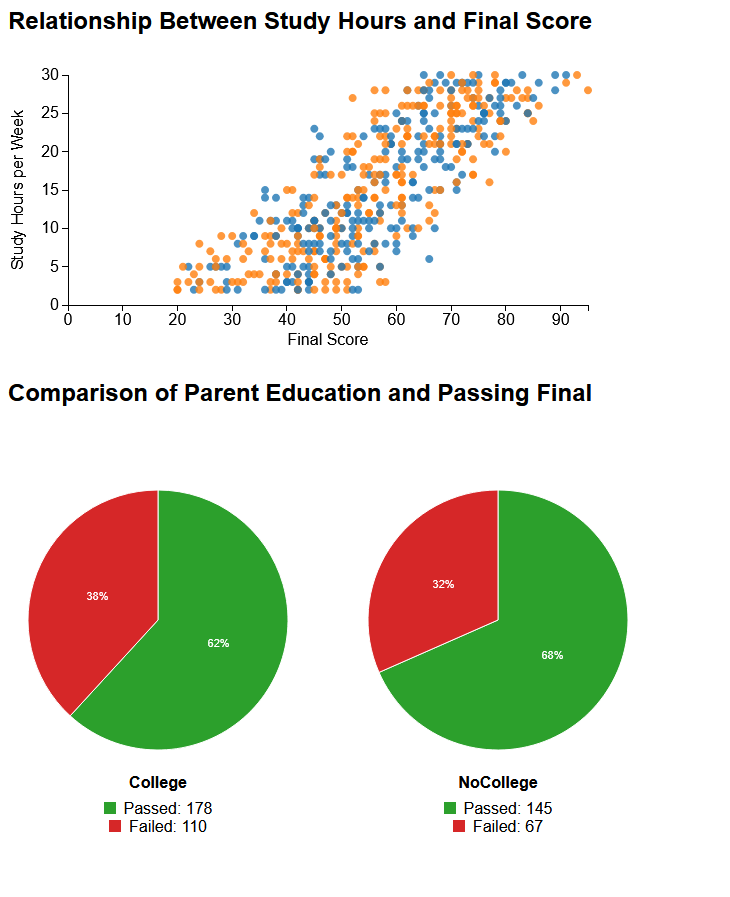
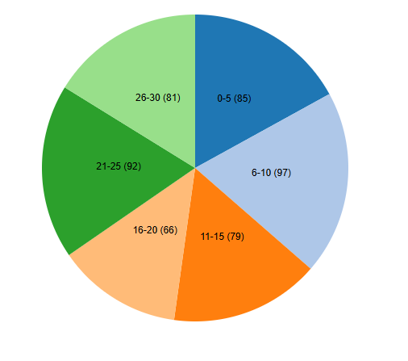

<div class="header">
        <div class="nav-bar">
            <a href="index.html">| Visualization |</a>
            <a href="Documentation.html"> | Documentation |</a>
<h1> Visualization Process</h1>
 <p>

The data set I wanted to include was at first glance fantastic because it had so much different information, however
once I really started to try to make something of it all I realized I was wildly over ambitious. I knew for certain I wanted to use study hours in relation to final score. However, I was tripping myself over by wanting
to tell as much as I could. Pair this with my using One of the first D3 video lessons having the double graph, I used this as a spring board.
</p>

<p>

I initially started with a scatterplot for study hours per week and put that against the final score. It was kinda cool, I liked it initially, however over time it felt like it was busy
while not really actually telling too much. Similarly, I was messing with pie charts and did a dual chart comparing the pass/fail rate of students with parents who had a secondary schooling background
against those that didn't. There was very little difference between the two as it turned out. Overall, it didn't feel like I had accomplished much, and moreso was just filling out the page with Visualizations for 
the sake of it.

At this point I started over, but knowing for certain I wanted to use a pie chart, and wnating to use study time. It was here that I scrapped the usage of the Pass/Fail information of the csv,
as I figured this could largely be misleading. I felt like using a file of 300 entries was pointless if I was going to funnel them into two categories from the start and not differentiate between students who had achieved
a 95% and a 78%. 
</p>

<p>
I throttled back to a single pie chart. Initially, it was simply breaking down how many students studied a specific range of hours, with the wedges each being a range. 
This would ultimately stick around with little changed for the final iteration. It was here that I realized the best course of action to connect study hours to something meaningful was by connecting it to 
how those study hours affected their final grade. Or more specifically how it affected the score difference between the two grades, prior and recent. At this point I didn't really make any changes to what I wanted to
show, it was moreso me fumbling around with d3 and realizing I could impliment the hover option, allowing me to reduce the amount going on on the screen at a given time.
</p>

<video width="500" height="250" controls>
        <source src="visualization_video.mp4" type="video/mp4">
        </video>
